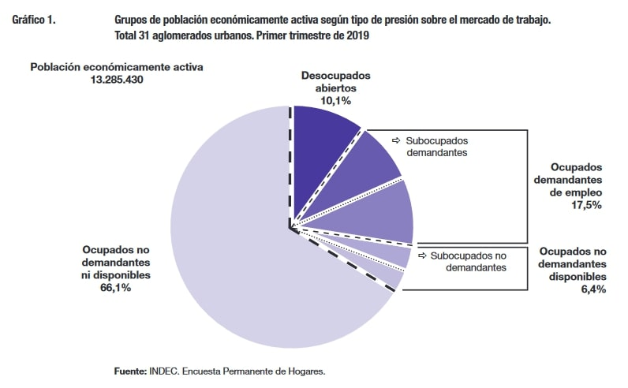

Introducción a R para Ciencias Sociales. Aplicación practica en la EPH
1 Introducción
1.1 ¿Qué es la EPH?

1.2 Traduzcamos
1.2.1 Objetivos de la EPH
El objetivo general de la encuesta es el conocimiento de un aspecto de nuestra realidad: La inserción de la población en la estructura económico-social1.
.footnote[ [1] La nueva Encuesta Permanente deHogares de Argentina. 2003]
Dicha inserción puede ser analizada a partir de tres ejes:
- Características demográficas.
- Inserción en la producción de bienes y servicios.
- Participación en la distribución del producto social.
1.3 Características de la EPH
- Orígen: La encuesta nace en 1973 con la modalidad de relevamiento “puntual”: 2 ondas por año, en mayo y octubre.
- Cambios: En 2003 se lleva adelante la reformulación de la encuesta: pasa a ser un relevamiento contínuo y trimestral, relevandose 4 veces al año.
- Esquema: centralización normativa (equipo central) - descentralización ejecutvia (equipos provinciales).
- Cobertura o dominio de estimación: Principales aglomerados urbanos. Fue creciendo progresivamente desde la puntual hacia la continua, hasta llega a 31 aglomerados urbanos (todas las capitales de provincia + aquellos aglomerados con +100.000 habitantes).
- Concepto de aglomerado: En las encuestas de fuerza de trabajo dos localidades distintas, pero próximas y que conforman en realidad un único mercado de trabajo, son tomadas como un único aglomerado.2
.footnote[
[2] EPH. Actualización del diseño de sus muestras 1974-2003]
- La encuesta representa al 72% del total urbano (En Arg. según el censo 2010 la población urbana llegaba al 90%)
- Que es el 62% del total pais
- Una vez al año se aplica al total urbano (EAHU).
- Proyecto en etapa de pruebas: cobertura del ámbito rural/urbano-rural (extensión al total país).
1.4 La Muestra
La Encuesta Permanente de Hogares es una encueta por muestreo: relevo a un “pequeño” puñado de hogares que representan al conjunto de la población.
- Diseño Muestral: bietápica estratificada.
- Tener en cuenta:
- La representatividad
- El margen de error
- Coeficientes de variación de los estimadores
- Límite superior/inferior de la estimación puntual
- Esquema de rotación: 2-2-2 (la vivienda entra dos trimestres consecutivos - descansa dos trimestres consecutivos - vuelve a la muestra dos trimestres consecutivos)
1.4.1 Principales temáticas abordadas por la EPH
- Características demográficas básicas
- Características ocupacionales
- Características migratorias
- Características habitacionales
- Características educacionales
- Características de ingreso
1.5 Instrumento de medición: El medio hacia la operacionalización de los objetivos
- Operacionalizar: pasar de conceptos teóricos y abstractos a indicadores concretos y medibles.
- Recordar conceptos:
- Confiabilidad (que el instrumento mida lo mismo sobre el mismo fenómeno a lo largo del tiempo)
- Validez (¿medimos lo que decimos que queremos medir?)
1.6 Tres cuestionarios
1.6.1 Cuestionario de vivienda
- Definición: “cualquier recinto fijo o móvil que ha sido construído o adaptado para alojar personas. Las viviendas pueden ser particulares o colectivas. La EPH sólo encuesta las particulares”.
- Principales dimensiones que aborda el cuestionario de vivienda: * Identificación de viviendas y hogares * Características de la vivienda y hábitat * Condición de residencia
1.6.2 Cuestionario de hogar
- Definición: “Persona o grupo de personas parientes o no, que viven bajo un mismo techo y comparten los gastos de alimentación”
Principales dimensiones:
+ Características habitacionales + Caracetrísticas demográficas básicas (Sexo, edad, relación de parentesco) + Características educacionales (alfabetización, nivel educativo) + Condición de migración (país de nacimiento, de residencia en los últimos 5 años) + Cobertura de salud + División social del trabajo doméstico en el hogar + Presencia de discapacitados en el hogar + Estrategias y fuentes de manutención de los hogares + Ingresos monetarios no laborales
1.6.2.1 El jefe o la jefa de hogar
Definición: Aquella persona reconocida como tal por los demás miembros del hogar. - No es estático. Responde tanto a un modelo general de asignación social y sexual de roles al interior del hogar como a criterios operativos:
+ económicos (quien trabaja / quien más cobra)
+ antigüedad
+ horarios (a quien se encuentra en el hogar)En caso de no haber acuerdo entre los miembros del hogar acerca de quién es el jefe o la jefa, se asigna por el o la encuestadora según los siguientes criterios (en orden de prioridad):
1. Quien tiene a su cargo la responsabilidad económica del hogar 1. El miembro más antiguo del hogar 1. Quien haya acudido al llamado
1.7 Marco analítico y temático de la EPH
1.7.1 Cuestionario de individuos
- Aplicación: Todas aquellas personas residentes del hogar mayores de 10 años (niñosy niñas en edad escolar vs en edad de trabajar, en Argentina y otros países).
- Respondentes Mayor de 18 años (Puede ser auto o no auto-respondente)
Mide el principal concepto: El Trabajo:
- Definiión de la 19° Conferencia Internacional del Trabajo - OIT (CIET, 2013): Todas las actividades desarrolladas en unidades económicas por personas de cualquier sexo con el fin de producir bienes y servicios para el consumo de terceros o autoconsumo.
- EPH: Es toda actividad destinada a la producción de bienes y servicios con valor económico en el mercado (trabajo en la ocupación)
- La EPH toma una definición acotada del concepto de trabajo, acorde a sus objetivos y a sus instrumentos. No puede perder la capacidad de medir.
Entonces, ¿según la EPH, a quienes se los considera “trabajando”?
- ¿Si realiza actividades laborales pagas en dinero o especie (en relación de dependencia, changas, trabajos temporarios, etc.)?
SÍ
- ¿Si rrealiza actividades para su propio consumo?
NO
- ¿Si realiza una contraprestación laboral en virtud de la recepción de un subsidio o plan social?
SÍ
- Si es trabajador o trabajadora por cuenta propia con instalaciones (taller, negocio u oficina) y concurrió a su lugar de trabajo aunque no tuvo clientes?
SÍ
¿Si realiza actividades domésticas en su hogar (por ej. Ama de casa)?
NO
¿Si realiza actividades voluntarias?
NO
¿Si realiza actividades laborales no remuneradas (por ej. docentes ad-honorem, pasantes)?
SÍ
1.8 Cuestinario individual: Principales indicadores
Condición de actividad: relación de las personas con la producción de bienes y servicios con valor económico en el mercado.
Categorías de la variable:
Ocupado u ocupada (quienes se encuentran trabajando en la semana de referencia o no trabajando pero manteniendo un puesto de trabajo -suspensiones-)
Desocupado o desocupada (quienes no tienen trabajo, están disponibles para trabajar y buscan trabajo activamente en algún momento de los últimos 30 días)
Inactivo o inactiva (quienes no se encuentran trabajando ni buscaron activamente trabajo en el período de referencia -últimos 30 días-)
Población económicamente activa: Aquellas personas que tienen una ocupación o que sin tenerla la están buscando activamente (población ocupada + desocupada)
1.9 Caracterización de la población ocupada
Pluriempleo
Subocupación y sobreocupación -horaria-
Demanda de empleo
Categoría ocupacional: En cuanto a la posición que tienen las personas respecto al esquema de relaciones sociales de producción, de un sistema de producción histórico y vigente (el capitalismo), los individuos se pueden clasificarse en:
Patrones
Cuenta propia
Asalariados
Trabajadores familiares

1.9.1 Otros indicadores para describir a la población ocupada
Intencidad en la inserción (subempleo)
Búsqueda de otra ocupación (y sus causas)
Tamaño del establecimiento
Antigüedad en el puesto de trabajo / Continuidad laboral
Calidad del empleo
Utilización de capital (propio / ajeno)
Movimientos interurbanos

1.9.2 Caracterízación de la población desocupada
Tiempo de búsqueda
Razones por las que no encuentra trabajo
Temporalidad en la desocupación (nuevo desocupado / Viejo desocupado)
Características de la última ocupación

1.9.3 Clasificadores utilizados en la EPH (Rama de actividad y Tarea / Ocupación)
Actividad (rama): Clasificador de Actividades para Encuestas Sociodemográficas (CAES-MERCOSUR)
Ocupación: Clasificador Nacional de Ocupaciones (CNO-2001-INDEC)
Códigos geográficos: Países y provincias
Acceso a materiales de la Encuesta:
Sistema de consulta a los cuadros regulares de la EPH contínua
class: middle, center, inverse ## Ejercicios
Identificar en los cuestionarios de vivienda, de hogar e individual las preguntas que dan cuenta de las áreas temáticas abordadas por la eph.
Identificar, a su vez, qué preguntas dan cuenta de las temáticas del mercado de trabajo (tipo de inserción) y cuáles vinculadas al circuito de satisfacción de necesidades.
class: center, middle, inverse
Gracias!